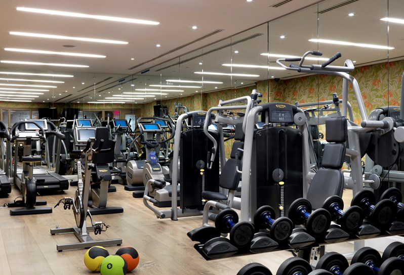

Hit the gym
By: Daniel Szili
Flex on them.
Finally the most
famous way to exercise not only among students but every people.
Choose you place.
Gym is actually one of the easiest thing to do next to school, you just go down to the gym for
1 hour while you are having intense workout for that time. So
if you want to save more time you should look up the local gym’s sites and look
up the closest to you. Or if you read negative things about that place you can
just look up the next closest one.

Picture of planet fitness, one of the most famous gym network
in the US.
Everything is waiting for you.
One of the biggest upsides of hitting the gym
is that you have everything you need in the facility. You just have to bring yourself and your workout clothes. You have a variety
of workout equipments, such as barbells, treadmills
and etcetera. And some of the gyms even have saunas and pools, all of the good stuff you need.

Variety of gym equipments.
Get your
master.
One of the
most important thing about gyms, is to not just jump in
head first. There are a lot of exercises what if you do wrong you will not
achieve anything or worst, even get injured. For the first couple of months you
should hire a personal trainer who will help you by showing the basics, putting
together a personal training plan and one of the most important things, a diet.
After your
trainer showed you what to do you an adjust your training plan to fit your
style even more. And the most important thing is always be fully dedicated to
your diet. As I mentioned before you can do anything but if you don’t do your
diet it is going to be hard to achieve anything.

Personal trainer training a person.